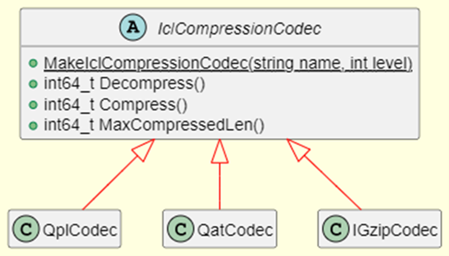

Intel Codec Library User Guide¶
Module description¶
The Intel Codec Library (ICL) provides compression and decompression library for Apache Hadoop/Spark/Parquet/Arrow to make use of the hardware accelerator, and/or software for compression/decompression. It not only supports the use of Intel hardware accelerator such as QAT and IAA to accelerate the deflate-compatible data compression algorithm but also supports the use of Intel optimized software solutions such as ISA-L(Intel Intelligent Storage Acceleration Library) and IPP(Intel Integrated Performance Primitives Library) which utilize the latest CPU features (such as AVX-512) to accelerate the data compression.
Currently the Intel Codec Library supports the following backends:
IGZIP- use ISA-L software to accelerate the compressionQAT- use QAT hardware accelerator to accelerate the compressionQPL- use IAA hardware accelerator to accelerate the compressionIPP- use IPP software to accelerate the compression. Note: Please refer FAQ for IPP commercial products support.
Please check the table below to see which compression codecs are supported by each backend.
| Deflate | LZ4 | |
|---|---|---|
| IGZIP | Y | X |
| QAT | Y | Y |
| QPL | Y | X |
| IPP | Y | Y |
SDK API¶
The class diagram of Intel Codec Library is shown below:
Building the Library¶
Prerequisites¶
Before building Intel Codec Library, install and set up the following tools:
- nasm 2.14.0 or higher (e.g., can be obtained from https://www.nasm.us)
- A C++17-enabled compiler. GCC 8 and higher should be sufficient
- CMake version 3.16 or higher
Build¶
To build Intel Codec Library, complete the following step:
Get the Source using the following command:
git clone --recursive https://github.com/intel/BDTK.git <BDTK>
Build the library by executing the following commands in
<BDTK>mkdir build cd build cmake -DCMAKE_BUILD_TYPE=Release -DBDTK_ENABLE_ICL=ON -DBDTK_ENABLE_CIDER=OFF ../cpp cmake --build .
Note
You need to set more options to customize your build. See Build Options for details.
Build Options¶
By default, the C++ build system creates a fairly minimal build. Intel Codec Library supports the following build options which you can configure into build system by passing boolean flags to cmake.
-DICL_WITH_IGZIP=[ON|OFF]- Build ICL with IGZIP backend (ONby default).-DICL_WITH_QAT=[ON|OFF]- Build ICL with QAT backend (OFFby default).-DICL_WITH_QPL=[ON|OFF]- Build ICL with QPL backend (OFFby default).-DICL_WITH_IPP=[ON|OFF]- Build ICL with IPP backend (OFFby default).-DICL_BUILD_TESTS=[ON|OFF]- Build the ICL googletest unit tests (OFFby default).-DICL_BUILD_BENCHMARKS=[ON|OFF]- Build the ICL micro benchmarks (OFFby default).
Modular Build Target¶
Since there are several suport backends of the ICL, we have provided modular Make target for building each supported backends, group of unit tests and benchmarks:
make iclfor ICL libraries which enable only igzip backend support.make icl-qatfor ICL libraries which enable only qat backend support.make icl-qplfor ICL libraries which enable only qpl backend support.make icl-ippfor ICL libraries which enable only ipp backend support.make icl-allfor ICL libraries which enable all supported backends.make icl-testfor ICL libraries which enable unit tests for all supported backends.make icl-benchmarkfor ICL libraries which enable benchmark for all supported backends.
Additional requirements for QAT backend¶
QAT backend is based on QAT driver and QATzip library. Please manually download QAT driver for your system and follow its README to build and install QAT driver. In addition to install the QAT driver you also need follow QATZip library README to manually build and install the QATZip library.
After installing the QAT driver and QATZip library, you need to do some confiugration on the QAT to enable QAT backend at run-time.
Enable huge page
echo 1024 > /sys/kernel/mm/hugepages/hugepages-2048kB/nr_hugepages rmmod usdm_drv insmod $ICP_ROOT/build/usdm_drv.ko max_huge_pages=1024 max_huge_pages_per_process=48
Update configuration files
You need have the right QAT configuration files at the directory of
/etc. Please see QAT Programmer’s Guide for how to configure QAT. We provide an example configuration file for your reference. This configuration file sets up to 4 processes that can bind to 1 QAT, and each process can use up to 16 QAT DC instances. Please modify this configuration file according to your requirements and copy the configuration file to directory of/etc/.Restart QAT driver
adf_ctrl restart
You can check the QAT hardware status use the below command:
adf_ctrl status
If all goes well, the output should be like:
There is 8 QAT acceleration device(s) in the system: qat_dev0 - type: 4xxx, inst_id: 0, node_id: 0, bsf: 0000:6b:00.0, #accel: 1 #engines: 9 state: up qat_dev1 - type: 4xxx, inst_id: 1, node_id: 1, bsf: 0000:70:00.0, #accel: 1 #engines: 9 state: up qat_dev2 - type: 4xxx, inst_id: 2, node_id: 2, bsf: 0000:75:00.0, #accel: 1 #engines: 9 state: up qat_dev3 - type: 4xxx, inst_id: 3, node_id: 3, bsf: 0000:7a:00.0, #accel: 1 #engines: 9 state: up qat_dev4 - type: 4xxx, inst_id: 4, node_id: 4, bsf: 0000:e8:00.0, #accel: 1 #engines: 9 state: up qat_dev5 - type: 4xxx, inst_id: 5, node_id: 5, bsf: 0000:ed:00.0, #accel: 1 #engines: 9 state: up qat_dev6 - type: 4xxx, inst_id: 6, node_id: 6, bsf: 0000:f2:00.0, #accel: 1 #engines: 9 state: up qat_dev7 - type: 4xxx, inst_id: 7, node_id: 7, bsf: 0000:f7:00.0, #accel: 1 #engines: 9 state: up
Note
- For non-root user, you nedd
add Non-root user to qat group
sudo usermod -g qat username # need to relogin or sudo newgrp qat # effective immediately
- The above additional requirements are not required when building the Intel Codec Library but only at runtime.
- For non-root user, you nedd
For more Intel® QuickAssist Technology resources go to Intel® QuickAssist Technology (Intel® QAT).
Additional requirements for QPL backend¶
libaccel-config library version 3.2 or higher is required for building Intel Codec Library with QPL support. Refer to accel-config releases for how to install.
Additional requirements for IPP backend¶
To be added
How to use Intel Codec Library¶
We provided several ways to use Intel Codec Library:
- ICL C++ API
- ICL JAVA API
- ICL Arrow Compression Codec API
ICL C++ API¶
Intel Codec Library provides C++ API that the end users can directly call the C++ API to integrate into their own applications.
Let’s walk through the below example that compresses and decompresses data with igzip backend with compression leve one to learn the basic workflow of Intel Codec Library C++ API.
#include "icl/icl.h"
auto codec = IclCompressionCodec::MakeIclCompressionCodec("igzip", 1);
int max_compressed_len =
static_cast<int>(codec->MaxCompressedLen(data.size(), data.data()));
std::vector<uint8_t> compressed(max_compressed_len);
std::vector<uint8_t> decompressed(data.size());
int64_t actual_size =
codec->Compress(data.size(), data.data(), max_compressed_len, compressed.data());
compressed.resize(actual_size);
int64_t actual_decompressed_size = codec->Decompress(
compressed.size(), compressed.data(), decompressed.size(), decompressed.data());
To work with Intel Codec Library C++ API, the application will need to:
- The application only needs to include one header file
icl/icl.h, which specifies the prototypes of all the functions. - Call IclCompressionCodec::MakeIclCompressionCodec() to create the instance of IclCompressionCodec, you can pass the required underlying codec and the compression level as parameters to this function.
- Call MaxCompressedLen() to query the required compressed buffer size
- Allocate compressed buffer according to the returned value of step 3.
- Call Compress() to perform a compression operation for the input data buffer and return the actual compressed size.
- Or call Decompress() to perform a decompression operation.
- Free resources.
ICL JAVA API¶
To Be Added.
ICL Arrow Compression Codec API¶
We also provides an Arrow patch that enable the Arrow Compression Codec to leverage the Intel Codec Library to accelerate the Arrow GzipCodec. Softwares(e.g., the native parquet reader, the Arrow IPC, the Arrow Flight etc.) that use Arrow Compression Codec can get performance boost without any code modify and simply replacing the Arrow library.
To use Arrow Compression Codec with Intel Codec Library, users need rebuild Arrow following the below guide:
Build Intel Codec Library using the following command:
make icl
Note
- Please see icl_building_the_library_reference_link for how to customize your build and enable required codec.
- Please make sure to turn off the option
-DICL_BUILD_TESTS=OFFand-DICL_BUILD_BENCHMARKS=OFFwhen build - Please manually copy icl_codec.h and libicl_codec.a to your search path for example /usr/local/include and /usr/local/lib when build arrow in the below step
Download the Arrow patch here.
Get the Arrow Source using the following command:
git clone -b apache-arrow-10.0.0 https://github.com/apache/arrow.git
Note
Currently, we only provide the patch for Arrow version 10.0.0, other versions please make corresponding modifications based on this patch.
Apply the patch using the following command:
cd arrow git am 0001-Add-ICL-support.patch
Build Arrow with
-DARROW_WITH_ICL=ONoptionNote
- Please ref here for how to build arrow.
Set the environment
GZIP_BACKENDto enable Intel Codec Library, for example, to enableigzipbackend, you can setGZIP_BACKENDwith the following command:export GZIP_BACKEND="igzip"
Note
- The supported
GZIP_BACKENDcan be set to one ofigzip,qat,qpl, oripp - The Arrow Codec must be set to
Compression::GZIP
- The supported
Use Arrow Codec API as below example:
#include "arrow/util/compression.h" ARROW_ASSIGN_OR_RAISE(auto codec, Codec::Create(Compression::GZIP, 1)); std::vector<uint8_t> compressed(max_compressed_len); std::vector<uint8_t> decompressed(data.size()); int max_compressed_len = static_cast<int>(codec->MaxCompressedLen(data.size(), data.data())); ARROW_ASSIGN_OR_RAISE( auto compressed_size, codec->Compress(data.size(), data.data(), max_compressed_len, compressed_data.data())); ARROW_ASSIGN_OR_RAISE( auto decompressed_size, codec->Decompress(compressed.size(), compressed.data(), decompressed.size(), decompressed.data()));
How to run benchmark¶
Intel Codec Library provided two types of benchmarks:
- Benchmark for normal file
- Benchmark for Parquet file
Benchmark for normal file¶
This benchmark will read Calgary corpus data which commonly used for comparing data compression algorithms as input and use different compressors supported by Arrow to compress and decompress that data to benchmark different codec’s performance.
To run the benchmark following the below guide:
Build Intel Codec Library with benchmark option on:
mkdir build cd build cmake -DCMAKE_BUILD_TYPE=Release -DBDTK_ENABLE_ICL=ON -DICL_BUILD_BENCHMARKS=ON -DBDTK_ENABLE_CIDER=OFF ../cpp cmake --build .
Note
- To build benchmark, you need build Arrow with ICL patch first, please see ICL Arrow Compression Codec API for how to build Arrow.
- Please see icl_building_the_library_reference_link for how to customize your build and enable required backend.
- Please make sure to turn on the option
-DICL_BUILD_BENCHMARKS=ONwhen build - Please make sure build ICL with the correct Arrow package which build with ICL patch, you can set the environment
ARROW_HOMEto the folder where installed the Arrow with ICL patch.
Prepare the
Calgary corpusdata for benchmark You can download the data from here, then unzip it and tar these files to a tar filecalgary.tarunzip largecalgarycorpus.zip -d calgary tar cvf calgary.tar calgary
Copy the calgary.tar to folder where you run the CompressionBenchmark which generated in step 1.
Note
- To enable ICL, you need set the environment
GZIP_BACKENDwhen run the benchmark.
- To enable ICL, you need set the environment
Benchmark for parquet file¶
We use TPC-H lineitem table as the source to benchmark the parquet reader performance by reading all the columns in this table. Please follow the below steps to generate the Parquet file for TPC-H lineitem table and run the benchmark.
Build Intel Codec Library with benchmark option on:
mkdir build cd build cmake -DCMAKE_BUILD_TYPE=Release -DBDTK_ENABLE_ICL=ON -DICL_BUILD_BENCHMARKS=ON -DBDTK_ENABLE_CIDER=OFF ../cpp cmake --build .
Note
- To build benchmark, you need build Arrow with ICL patch first, please see ICL Arrow Compression Codec API for how to build Arrow.
- Please see icl_building_the_library_reference_link for how to customize your build and enable required backend.
- Please make sure to turn on the option
-DICL_BUILD_BENCHMARKS=ONwhen build - Please make sure build ICL with the correct Arrow package which build with ICL patch, you can set the environment
ARROW_HOMEto the folder where installed the Arrow with ICL patch.
Generate the Parquet file for TPC-H lineitem using the
TpchDataGentool, in yourbuilddirectory, run the following command will generate parquet filelineitem.igzip.parquetwithigzipbackend with compression level one at TPC-H SF1../TpchDataGen -s 1 -c 'igzip' -l 1 -f lineitem.igzip.parquet
Note
- You can specify the backend use
-cparameter,-fto specify the name for parquet file,-lto specify the compression level and-sto specify the scale factor for TPCH datagen.
- You can specify the backend use
Run the bechmark using the
ParquetBenchmarktool. As a example, the following command will benchmarkigzipbackend for single thread which will run 10 iterations../ParquetBenchmark -c 'igzip' -f lineitem.igzip.parquet -i 10 -t 1
Note
- You can specify the backend use
-cparameter,-fto specify the name for parquet file,-ito specify the iterations and-tto specify the threads run the benchmark. - Please make sure that the file specified by
-fis generated by-cbackend in step 2.
- You can specify the backend use
Limitation¶
In order to take full advantage of hardware acceleration, Intel Codec Library only supports block-based interface for compression, aka “one shot”, so the data compressed by ICL can’t be decompressed by stream-based software like Gzip.